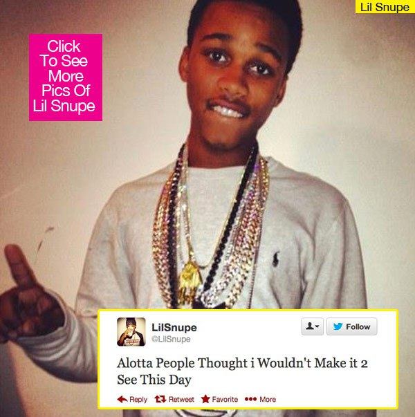

"Addarren Ross, or commonly known as Lil Snupe, is from Louisiana. He was born on June 13,1995. Addarren was raised by his single mother, his father
has been in jail since Addarren was four years old. Snupe came to fame in 2012 when he approached Meek Mill tour bus and handed Meek his demo. Moments after Meek signed
Addarren to DreamChasers Record Label (DC). Meek Mill became Snupe's mentor and the two became very close. Lil Snupe released his first mixtape in 2012 named "16 & Runnin: Tha Mixtape."
Lil Snupe also released his second and last mixtape named "R.N.I.C" On June 13,2013 Snupe turned 18 and tweeted "Alotta people didn't I would make it to dis day." While the statement seems usual, Snupe
was from the slums of Louisiana where killing, drugs and gangs were common. Unfortunately, one week after his birthday he was murdered, shot two times on the torso.
He was murdered at an apartment in Winnfield, Louisiana. His killer is Tony Holden, he turned himself to authorities. His motives are still unclear, although many
people have different opinions varying of jealousy,money or a dice game. It is also reported that Holden was a close friend of Snupe. There was plenty of rappers that
grieved and were in utter shock over the murder including Bun B, Louie V Gutta, Omelly and Meek Mill. Meek Mill had tweeted " R.I.P to my lil f****** n***** snupe #lilsnupe
I tried everything in my power 2 keep that kid out the streets!" and "Dey killed my lil n**** snupe! wtf!" Two popular tributes for Snupe are "Lil Nigga Snupe" by Meek Mill
and "Lil Snupe Tribute" by Louie V Gutta. REST IN PEACE LIL SNUPE! #GONEBUTNEVERFORGOTTEN #LONGLIVESNUPE
